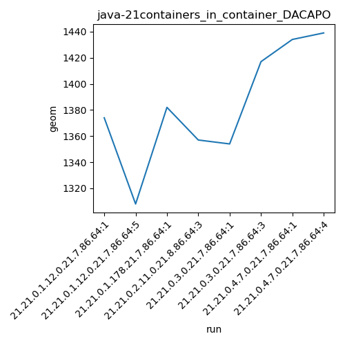
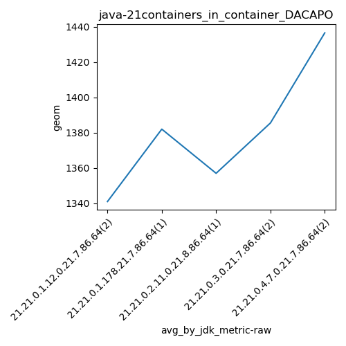
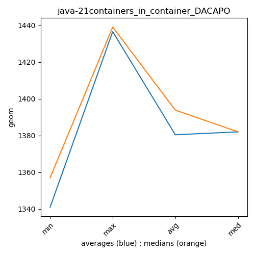

java-21 DACAPO
Context at bottom
/home/jvanek/git/benchmarks-in-nested-virtualisation-toolchain/final_results/containers_in_container_results/containers_in_container_DACAPO
java-21
DACAPO
containers_in_container_DACAPO
final score
Expected number of java-21 JDKs: 7
1st avgmed_alljdks_metric:
/home/jvanek/git/benchmarks-in-nested-virtualisation-toolchain/final_results/result_processing.py /home/jvanek/git/benchmarks-in-nested-virtualisation-toolchain/final_results/containers_in_container_results/containers_in_container_DACAPO geom False
values: [1374, 1308, 1382, 1357, 1354, 1417, 1434, 1439]

Expected number of iterations: 5
final number of values: 8 out of 35
Pass rate: 22.9%
values: (1308, 1439, 1383.125, 1382)

** accuracy from all jdks and runs
more is better
MIN: 1308
MAX: 1439
AVG: 1383.125
MED: 1382
Relative differences 1:
MIN-MAX: 9.0 %
MIN-AVG: 5.0 %
MIN-MED: 5.0 %
MAX-MIN: -10.0 %
MAX-AVG: -4.0 %
MAX-MED: -4.0 %
AVG-MED: -0.0 %
stored to java-21.properties. sort | uniq that!
2nd avgmed_by_jdk_metric:
values: [1341.0, 1382.0, 1357.0, 1385.5, 1436.5]

values: [1374, 1382, 1357, 1417, 1439]

values: (1341.0, 1436.5, 1380.4, 1382.0)
values: (1357, 1439, 1393.8, 1382)

** accuracy from all jdks where runs were avged
more is better
MIN: 1341.0
MAX: 1436.5
AVG: 1380.4
MED: 1382.0
Relative differences 1:
MIN-MAX: 7.0 %
MIN-AVG: 3.0 %
MIN-MED: 3.0 %
MAX-MIN: -7.0 %
MAX-AVG: -4.0 %
MAX-MED: -4.0 %
AVG-MED: 0.0 %
stored to java-21.properties. sort | uniq that!
** accuracy from all jdks where runs were medianed
more is better
MIN: 1357
MAX: 1439
AVG: 1393.8
MED: 1382
Relative differences 1:
MIN-MAX: 6.0 %
MIN-AVG: 3.0 %
MIN-MED: 2.0 %
MAX-MIN: -6.0 %
MAX-AVG: -3.0 %
MAX-MED: -4.0 %
AVG-MED: -1.0 %
stored to java-21.properties. sort | uniq that!
/home/jvanek/git/benchmarks-in-nested-virtualisation-toolchain/final_results/containers_in_container_results/containers_in_container_JMH
java-21
DACAPO
/home/jvanek/git/benchmarks-in-nested-virtualisation-toolchain/final_results/containers_in_container_results/containers_in_container_SPECJBB
java-21
DACAPO
/home/jvanek/git/benchmarks-in-nested-virtualisation-toolchain/final_results/containers_in_container_results/containers_in_container_RADARGUNs1
java-21
DACAPO
/home/jvanek/git/benchmarks-in-nested-virtualisation-toolchain/final_results/containers_in_container_results/containers_in_container_J2DBENCH
java-21
DACAPO
/home/jvanek/git/benchmarks-in-nested-virtualisation-toolchain/final_results/containers_in_container_results/containers_in_container_RADARGUNs3
java-21
DACAPO
pass rates:
containers_in_container_DACAPO=22.9%
Context:
- containers_in_container_results
- DACAPO